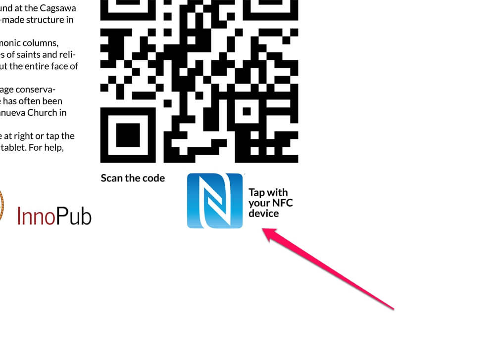

To download information by QR code scanning, you will need a QR Code scanning app for Android and iOS. Windows Phone users can scan the marker by using the camera and choosing Bing Vision.
If you use Android or iOS, you can download a free QR Code scanner from scan.me below.
Open the QR Code reader app and then scan the marker. Make sure the entire QR code is visible on the app.
If you have an NFC-compatible phone, you can check the settings and turn it on.
Place your phone on top of this part of the marker.